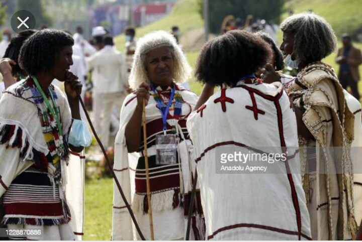
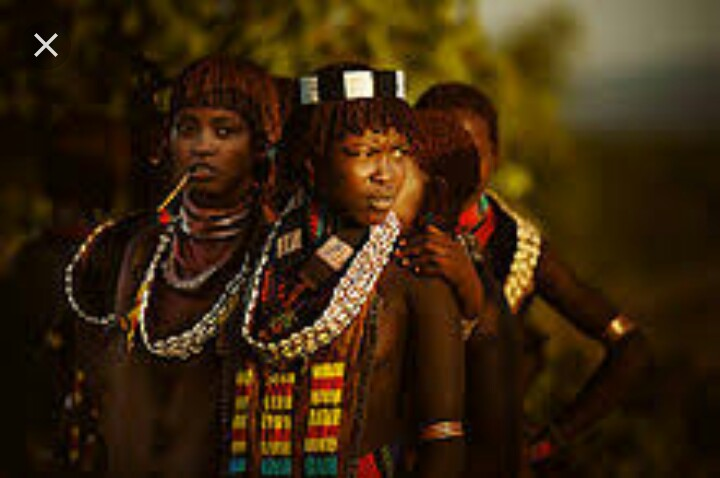

The culture of Ethiopia is diverse and generally structured along ethnolinguistic lines. The country's
Afro-Asiatic-speaking majority adhere to an amalgamation of traditions that were developed independently
and through interaction with neighboring and far away civilizations, including other parts of Northeast
Africa, the Arabian Peninsula, India, and Italy. By contrast, the nation's Nilotic communities and
other ethnolinguistic minorities tend to practice customs more closely linked with South Sudan and/or
the African Great Lakes region.

The music of Ethiopia is extremely diverse, with each of the country's ethnic groups being associated with unique sounds. Some forms of traditional music are strongly influenced by folk music from elsewhere in the Horn of Africa, especially Somalia. In northeastern Ethiopia, in Wollo, a Muslim musical form called manzuma developed in 1907. Sung in Amharic, manzuma has spread to Harar and Jimma, where it is now sung in the Oromo language. In the Ethiopian Highlands, traditional secular music is played by itinerant musicians called azmari (Zageth), who are regarded with both suspicion and respect in Ethiopian society.
In some central and northern areas, women's traditional clothes are often made from cloth called shemma.
It is basically cotton cloth, about 90 cm wide, woven in long strips which are then sewn together.
Sometimes shiny threads are woven into the fabric for an elegant effect. It takes about two to three
weeks to make enough cloth for one dress. The bottom of the garment or shirt may be ornamented with
patterns.Omotic Hamar women wearing their traditional attire

Men wear pants and a knee-length shirt with a white collar, and perhaps a sweater. They also frequently
wear knee-high socks, while women might not wear socks at all. Men as well as women wear shawls, the
netela. The shawls are worn in a different style for different occasions. When going to church, women
cover their hair with them and pull the upper ends of the shawl about their shoulders reproducing a
cross (meskelya), with the shiny threads appearing at the edge. During funerals, the shawl is worn so
the shiny threads appear at the bottom (madegdeg). Women's dresses are called habesha kemis, and are
often made from the shemma cloth. The dresses are usually white with some color above the lower hem.
Bracelets and necklaces of silver or gold are worn on arms and feet to complete the look. A variety
of designer dinner dresses combining traditional fabric with modern style are now worn by some ladies
in the cities.
These traditional clothes are still worn on a day-to-day-basis in the countryside. In cities and towns,
western clothes are popular. However, on special occasions such as New Year (Enkutatash), Christmas
(Genna) or weddings, some wear traditional clothes.
Often, a woman will cover her head with a shash, a cloth that is tied at the neck. Shama and kuta,
gauze-like white fabrics, are often used.[5] This is common among both Muslim and Christian women.
Elderly women will wear a sash on a day-to-day basis, while other women only wear a sash also called a
netela while attending church.